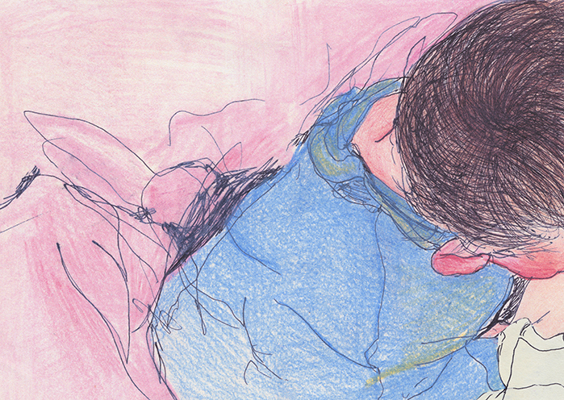
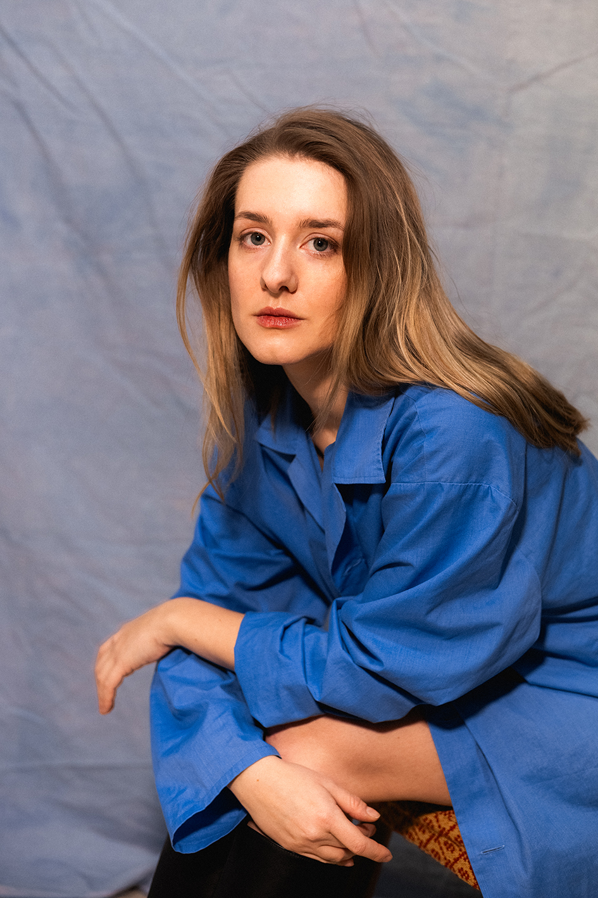
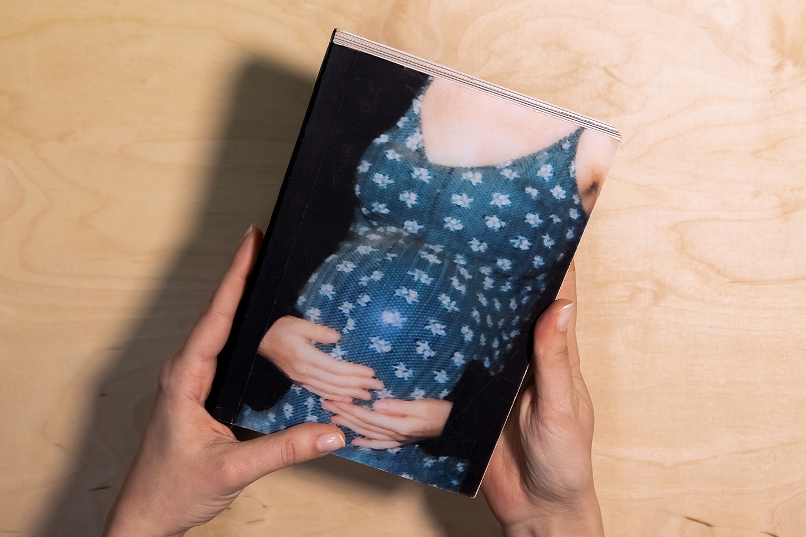
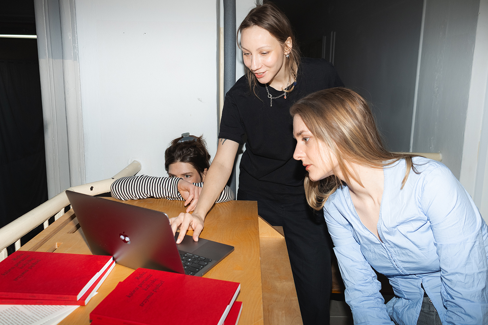
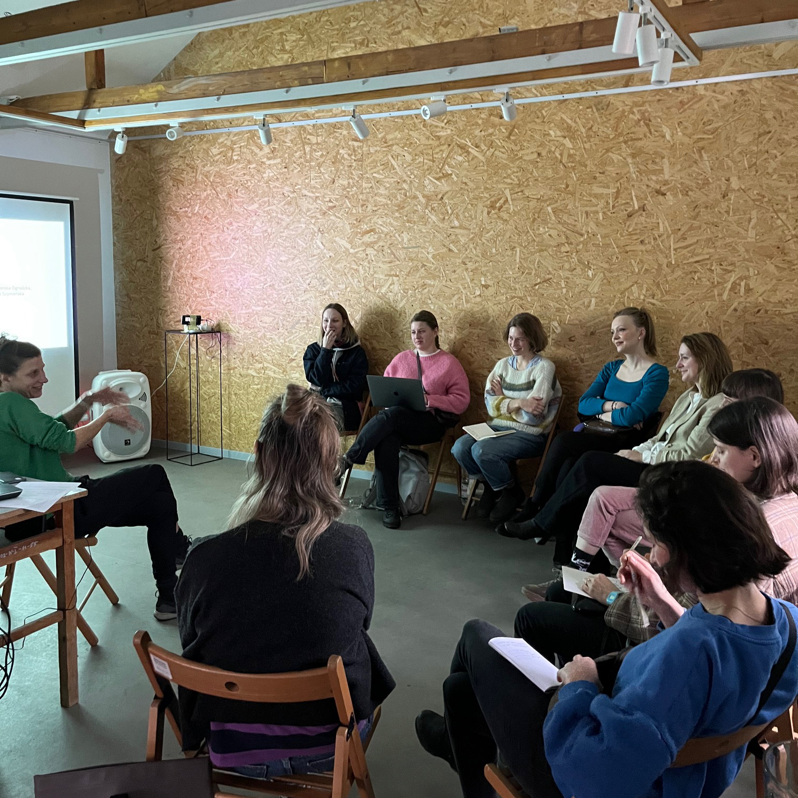
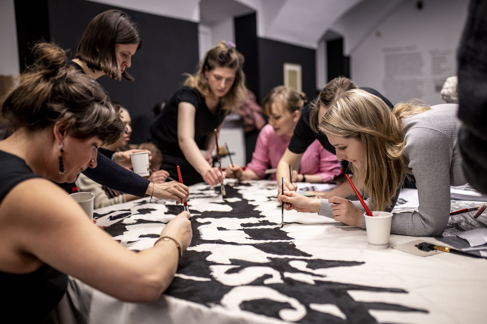
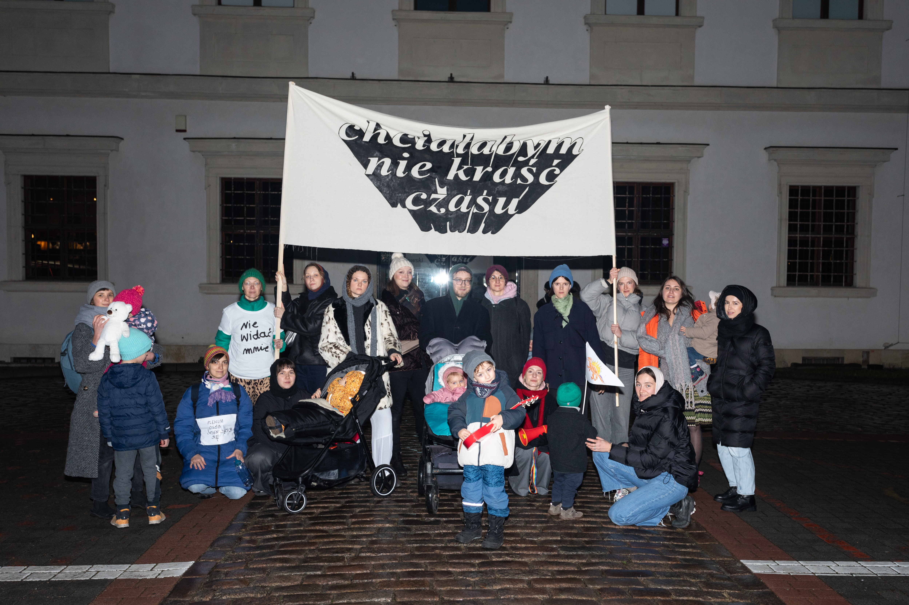

Visual artist, book designer, and educator based in Warsaw. A graduate of the Academy of Fine Arts in Warsaw (Illustration Studio of Prof. Grażka Lange), she focuses on the intersection of publishing practices, community building, and social engagement.
As a co-founder of the zine publishing project Okazjonalne Wydawnictwo Stopka and initiator of the Mothers creators (Matki twórczynie) collective, she explores the political and social dimensions of motherhood and creative labor. Her practice is deeply rooted in collaboration and democratic access to culture, which she currently develops in the Education Department at the Museum of Modern Art in Warsaw (MSN).

Education
Main Awards, Fellowships, and Residencies
Selected Experience
Selected Group Exhibitions
MA Degree Project: Art, Mothers, and the Art of Mothers (2021)
Visual research on the intersection of care labor and creative identity

Art, Mothers, and the Art of Mothers (2021) is an interdisciplinary research project that examines the structural and emotional friction between artistic creation and care labor. It is a study of the “non-linear time” of motherhood, a period where the professional and private spheres do not coexist but constantly collide, forcing a radical redefinition of artistic methodology.The project consists of two inseparable parts: a visual archive of over 100 drawings and a theoretical thesis that deconstructs the patriarchal archetypes of femininity. By situating my personal experience within the context of feminist philosophy and sociology, I treat the “messiness” of domestic life not as an obstacle to art, but as its primary subject matter and a source of new visual language. This work is an attempt to create a “carrier bag”, a container for the fragmented, everyday reality of motherhood that is often excluded from the linear narrative of the modern art world.
DOWNLOAD FULL THEORETICAL THESIS (PL)
VIEW ARTIST BOOK (PDF)
“This work is a message from within the experience. I created it during the first eighteen months of my son’s life, capturing the reality of motherhood in the ‘gaps of existence’ between naps, feeding, and sleepless nights.”
“I do not believe in an instinct that serves this purpose unerringly. I believe in the conscious deconstruction of myths to find an authentic core of experience.”
The project was supported by an extensive thesis exploring the integration of motherhood into the identity of the female artist. Drawing on the works of Adrienne Rich, Julia Kristeva, and Simone de Beauvoir, I analyze motherhood as a cultural construct rather than a biological destiny. I focus specifically on deconstructing the Polish “Matka Polka” (Mother-Pole) myth, a post-romantic phantasm of female sacrifice.
From the Academic Review (Dr. Michał Chojecki):
“The strength of this work lies in its specific realism; any parent will recognize their own experiences in these illustrations. The minimalist formal approach defends itself through the power of drawing, its credibility, and its directness. It accurately captures the emotional and intellectual looping that accompanies infant care.”
Mothers creators is a project we initiated in 2023 as visual artists: Agata Klepka, Sonia Jaszczyńska, and Agnieszka Strzeżek. As Mothers creators, we seek to negotiate the position of parents within the art world, working at the intersection of art and activism.
Mothers is an open group bringing together artists who combine creative work with caring for children. Our activities stem from the need to create a supportive space for caregivers whose artistic practice is shaped by the experience of parenthood. The project is also a response to the lack of systemic solutions, which we recognize firsthand as caregivers.
Parenthood has a significant impact on the possibilities for developing an artistic career; therefore, we seek solutions that can provide support and make it possible to carve out time for creative work. We are building a group that not only understands these challenges but also actively works to change these conditions, both systemically and from the grassroots level.

Media:
Interview: How to Change the World? – Founders of Mothers Creators
Mothers Creators in the Artistic and Research Process
Mothers Creators – Home Residency Program with Tutoring
NN6T article – Mothers Creators
Krytyka Polityczna article – Mothers Creators
Parents professionally connected to artistic activity face a range of challenges: lack of social security, isolation, precarious working conditions, a lack of caregiving support and cultural offerings for parents, prejudices surrounding the relationship between motherhood and art, and the economic pressure to give up creative work.
“The Hand That Rocks the Cradle Holds the Brush” tells the story of the need to change the status of care and parenthood within the artistic community and the cultural sector. It is a cross-sectional presentation of individual and collective practices by visual artists, curators, writers, researchers, and educators who, in contemporary Polish art, focus on care and motherhood.
In addition, the book includes guidance for creating parents, good practices and recommendations for cultural institutions, discussions of research on the professional situation of freelancer parents in the cultural sector and of women working at art academies, as well as excerpts from essays, including texts by Hettie Judah, Ursula K. Le Guin, and Mai Abu ElDahab, translated into Polish for the first time.
The book was created as part of the 7th edition of the Creative Communities Strengthening Program.
Authors: Sonia Jaszczyńska, Agata Klepka, and Agnieszka Strzeżek (founders of the group Matki twórczynie)
Design and layout: Oki Oki Studio
Year of publication: 2025
ISBN e-book edition: 978-83-68267-68-6
Publisher: Wydawnictwo Krytyki Politycznej
For International Readers: Why this book exists?
If you are visiting this site from outside of Poland, you might wonder why we dedicated so much energy to a single publication titled “The Hand that Rocks the Cradle, Holds the Brush” (2025).
This book is much more than just a collection of essays; it is our manifesto for survival and change in a cultural sector that often feels designed to exclude anyone with caregiving responsibilities. In Poland, the “romantic myth” of the solitary, childless artist still holds a firm grip on institutions, often leaving parent-artists, especially mothers, in a forced professional standstill without social security or institutional recognition.
Inside, we’ve gathered the essential tools to bridge this gap:
1. Evidence of Precarity:
We commissioned research that highlights the harsh reality for freelance artists and dancers, many of whom lack health insurance and maternity leave, forcing them to choose between their practice and their families.
2. A Toolkit for Institutions:
We don’t just complain; we offer solutions. This book provides a practical guide for galleries and residencies on how to become “parent-friendly”, from organizing childcare during openings to adjusting working hours to fit the rhythm of a child’s life.
3. New Artistic Narratives:
Through the lens of our “Mothers creators” collective and the “Home Residency” model, we show that parenthood doesn’t have to be an “obstacle” to creativity. It is, instead, a profound existential experience that can and should inform contemporary art.
4. A Conversation Across Generations:
We’ve included a “Small Anthology” of thinkers like Ursula K. Le Guin and Jolanta Brach-Czaina, framing the daily “bustle” of care as a valid, radical, and deeply meaningful form of labor.
We believe that art institutions must evolve to welcome care rather than marginalize it. We want to build a world where being a creator and a parent are two identities that support, rather than erase, one another.
Home-Based Residencies with Support from WOK
Matki Twórczynie began with a pilot program of home-based residencies, carried out in collaboration with the Warsaw Observatory of Culture (WOK) and supported by curator Anna Galas-Kosil (currently at the Theatre Institute) in December 2023 and January 2024. As part of the residencies, we formed a group, initiated the participants’ creative processes, and created a working structure along with an external commitment to the process. Participants received financial support to provide childcare during in-person meetings or utilized professional childcare available at the meeting venue, as well as artist tutoring by Joanna Synowiec and Jaśmina Wójcik, group support, and peer tandems.

We identified the key challenges as:
- isolation of young mothers/caregivers from the art world
- lack of time
- prioritization of caregiving and paid work over creative work
We established the following principles:
- support (from tutors and the group, financial support—funds for childcare/professional childcare services)
- structure (for work)
- external commitment
STRUCTURE OF THE RESIDENCY
1. The cycle began with an in-person meeting between tutor Joanna Synowiec and the group, which included a lecture and individual consultations held at the Rotational House of Culture in Jazdów. Participants were introduced to the principles and structure of the programme and divided into peer tandems.
2. The one-month period of creative work within the residency and within the peer tandems was based on mutual commitment and weekly meetings, during which participants asked each other, among other things: “Did you manage to find time for creative work?”
3. After this period, a second in-person meeting took place (WOKlab) with the tutor and the group. Tutor Jaśmina Wójcik prepared a lecture on her practice and offered recommendations. Participants shared presentations summarising their creative processes.
The cycle concluded with an online wrap-up meeting and an evaluation, including a survey.
Additional support provided by the pilot:
- consultations with tutors
- group support (circle)
- work in peer tandems
- childcare during meetings
- funds for childcare
- possibility of remote participation in meetings
HOW DO THE TANDEMS WORK?
AIMS:
- discussing progress in creative work
- providing an external commitment to creative practice
- giving and receiving support and motivation
RULES OF THE TANDEMS:
- no judging the other person
- regularity of conversations
- balance between giving attention and taking it
The home-based residency programme with tutoring was inspired by Lenka Clayton’s project “An Artist’s Residency in Motherhood.”
Participants included: Antonina Gugała, Anna Marczak-Gut, Aleksandra Wiechowska, Agata Klepka, Agnieszka Palińska, Anna Stefańska-Gozdecka, Agnieszka Strzeżek, Sylwia Walczowska, and Paulina Ufnal.
The project was planned and implemented by: Sonia Jaszczyńska, Agata Klepka, and Agnieszka Strzeżek; funded by Warsaw Observatory of Culture, with institutional support provided by Anna Galas-Kosil.
The Common Room consisted of monthly meetings (from September 2024 to January 2025) held at the Ujazdowski Castle Centre for Contemporary Art, open to all caregiving artists. The meetings were conceived as a space to strengthen creative processes and relationships within the community. Childcare during the meetings was provided by the education department of the host institution.

In January 2025, at the conclusion of the Common Room cycle at the Ujazdowski Castle Centre for Contemporary Art, we organised a manifestation–performance under the slogan: I Wish I Didn’t Have to Steal Time.
The slogan was chosen through a survey conducted among participants by the organizers. The survey also collected statements summarising in-depth, individual conversations about the experience of combining motherhood and artistic practice, prepared by Sonia Jaszczyńska.

During a collective walk, we read aloud slogans selected from the participants’ statements, as well as personal testimonies addressing the realities of creating art in the context of motherhood and caregiving labour. The event took the form of a public act of speaking out, drawing attention to the invisibility of artist-mothers and to the systemic barriers that hinder their functioning within the art world.
The manifestation was filmed by Anna Płonka.
Photographs from the manifestation:
Antonina Gugała
Participants in the manifestation:
Aleksandra Wiechowska, Alicja and Adaś, representatives of the Caregivers’ Plenum (Adu Rączka, Anna Witkowska), Julia Walawander, Agata Klepka, Nastazja Zielonka and Róża, Anna Marczak-Gut, Michał Pietracha, Zosia, Aleksandra Pietracha, Jerzyk and Agnieszka Strzeżek, Anna Stefańska-Gozdecka, Hania Kowalczyk and Romek, Sonia Jaszczyńska, Anna Kowalska-Żelewska and Kornelia, Katarzyna Maria Kimm.
Participants in the Common Room also included:
Kamila Śrótwa-Adamowicz, Asia Borkowicz, Kaja Gadomska, Antonina Gugała, Emily Kitabatake, Julia Knap, Diana Krawiec, Dominika Mizińska, Agnieszka Palińska, Irmina Walczak, Jaśmina Wójcik, among others.
Concept and organisation of the Common Room and the manifestation:
Sonia Jaszczyńska, Agata Klepka, Agnieszka Strzeżek
Exhibition at the Rotational Cultural Center
In May and June 2024, we jointly realized an exhibition and a program of accompanying events at the Rotational Cultural Center in Jazdów, coordinated by Anna Stefańska-Gozdecka. The program included workshops for caregivers with children, sessions for pregnant people, collective reading of texts, and guided tours. It was a moment of expanding the community: we invited additional participants to the exhibition, people who share our experiences, as well as those who address the experiences of motherhood and childhood in their artistic practice. Alongside the group formed during the residency at the Warsaw Observatory of Culture (WOK), the exhibition featured works by: Olga Dyjak, Grupa Łono (Marcelina Amelia, Marta Borkowska), Julia Knap, Magdalena Nowosadzka, and Spotlight Kids.
Curatorial text: Sonia Jaszczyńska and Agnieszka Strzeżek
This exhibition is our response to the need not to give up the identity of an active creator, one who exhibits and participates in the art circuit. Caregivers should not feel compelled to carve out a separate time in their lives or construct an identity that sets them apart from being mothers or caregivers to deserve respect, visibility, and the unapologetic presence of their creative work.
The social expectation that the work of artist-mothers be stripped of caregiving identity is unrealistic; only highly privileged, exceptional individuals can meet it. Art and motherhood share much in common; they are labors performed out of love that are not expected to receive proper remuneration. We want care to be welcomed within art-related spaces and valued rather than marginalized.
We will not fabricate a single, pure, flattening narrative, nor reduce the number of objects or the complexity of stories; there are many here, and they are diverse. The creative need is so great that it cannot be accommodated in this small house. Our work is not merely an object to be looked at, but an idea that accompanies us. We act collectively, amplifying individual voices that resonate more strongly within the collective, even as we speak from different experiences.
We do not want to wait for a future “without a child” or ask children to leave the studio. Creativity is a process that also includes intensive caregiving labor. Motherhood is not an isolated experience confined to the private sphere, and likewise, the creative work of mothers and caregivers is not immune to the presence of children.
“OHNE ENDE” is a narrative about the artistic and conspiratorial life of two extraordinary creators-partners in both work and life, who, in the late 1930s, settled in the Rocquaise House on the island of Jersey. Their daily lives were intertwined with creative endeavors, including writing, photography, performing, and producing and distributing underground materials. After years of political engagement, they were eventually exposed, imprisoned, and sentenced to death. The book raises questions about motivation, mutual support, the hierarchy of values, and the forms of expressing love in their extraordinary relationship.
Author: Dobromiła Dobro
Publisher: Dobromiła Dobro
Year of Publication: 2025
Book and Layout Design: Agnieszka Strzeżek
ISBN: 9788397138308
“JUICE simulation”
Author: Dobromiła Dobro
Book and Layout Design: Agnieszka Strzeżek
Publisher: Dobromiła Dobro, Warsaw
Printing and Binding: KNOW-HOW Printing House, Modlnica
ISBN: 978-83-971383-1-5
Award at the 65th Competition of the Polish Book Publishers Association The Most Beautiful Polish Books 2024, Category I: Fiction
From the jury:
“In this subtle and refined publication, text and illustration interweave to form a cohesive whole. The images are composed entirely of typographic elements – a concept evident from the cover, where a delicately shaped tulip emerges from intricately arranged letters, symbols, and punctuation marks. Inside, the book immediately captures attention with the precision of its title pages, marked by generous white space and a strikingly composed opening spread. Throughout the volume, letters both tell stories and evoke emotional resonance through unexpected graphic arrangements, typographic tables, and tonal fields of grey. This is a publication that invites multiple readings, evoking the best traditions of concrete poetry. Though modest in form, the book has been designed and executed with remarkable precision and care for detail.”
“KOSY” contains 15 stories about birds, dogs, dolphins, a girl with a knife, a snake woman, dirty water, blood, glitches, drones… These stories usually lack conventional meaning and can be surreal. KOSY is an experimental composition with dreamlike illustrations. The book was printed using the riso technique, then cut and sewn by hand.
Author: Dobromiła Dobro
Design and Layout: Agnieszka Strzeżek
Printing and Production: Agnieszka Strzeżek and Dobromiła Dobro
Editing: Anna Kiełczewska
Publisher: Dobromiła Dobro
Year of Publication: 2024
ISBN: 9788397138391
“Pudzian”, 2022, oil on canvas, 100 x 80 cm
“Adam Małysz”, 2016, oil on canvas, 100 x 100 cm
“Iga Świątek”, 2022, oil on canvas, 100 x 70 cm
“Koszmar Szczęsnego”, 2023, oil on canvas, 100 x 70 cm

In these series (2016 — 2023), I utilize the aesthetics of conscious clumsiness and error to clash the prestige of painting with the mass, nostalgia-driven cult of Polish sports icons. By deliberately operating within a “low” form and introducing my canvases into market circulation, I explore the mechanisms of the art world and the ease with which the line between high culture and pop-culture sentiment blurs. My presence in the photographs within everyday contexts completes the project, turning the process of creation and distribution into a visual game rooted in our shared iconosphere.
Stopka Publishing operated as an occasional zine publishing platform created by illustrators for illustrators. Occasional – because we published thematic zines in line with a seasonal event calendar. Zine-based because we independently printed our own publications in small editions. By illustrators for illustrators because we are graphic designers and illustrators producing artistic publications.
Our publications were printed on a Risograph, a digital duplicator that looks like a photocopier but works like mechanized screen printing. The Risograph has a small carbon footprint, and it uses soy-based inks and rice-paper stencils. Through our collaborative work on publications, we built a supportive and creative community.
We worked within a women-led collective because we care about promoting inclusivity and feminist values. We operated non-commercially, focusing on independent, author-driven projects. Members of the Stopka collective included Kenaya Huanca-Villan, Sonia Jaszczyńska, Zosia Lasocka, Agnieszka Strzeżek, Basia Strzeżek, and Karo Wyka. We organized open calls, edited texts, handled layout, printing, and binding, and created thematic promotional events for our publications, as well as exhibitions. Currently, Stopka Publishing operates on an ad hoc basis and focuses on graphic design.
@stopka_
WITAJ SZKOŁO is the first zine by Stopka Publishing. We created a workbook about the Polish school, describing what one can learn there and what one cannot. It was a mix of transgression and nostalgia. Inside, there are linear drawings that can be colored, accompanied by captions, anecdotes, and exercises, as well as works with a touch of humor.
Authors:
Marta Basak, Valerya D., Piotr Dudek, Stanisław Gajewski, Sonia Jaszczyńska, Tosia Kiliś, Klaudia Kozińska, Karolina Król, Igor Kubik, Ala Kultys, Linda Lach, Wiktoria Mańkowska, Iza Olesińska, Janek Porczyński, Michał Rybacki, Agata Stańczak, Hela Stiasny, Agnieszka Strzeżek, Basia Strzeżek, Basia Synak, Jul Walkowiak, Joanna Wojniłko, Karolina Wyka, and Weronika Zięba.
Organization and texts: Sonia Jaszczyńska and Agnieszka Strzeżek
Graphic design: Basia Strzeżek
Printing and binding: Agnieszka Strzeżek
Wielka Nieskończona Miłość is the second edition of our open-call publishing project. On February 14, the premiere of a set of Valentine cards printed on Risograph took place at Młodsza Siostra – perfect for sending with a heartfelt message.
Authors:
Marta Basak, Maciek Cholewa, Martynka Dagmarka, Rafał Dominik, Natalia Faron, Zosia Frankowska, Stanisław Gajewski, Kenaya Huanca-Villan, Sonia Jaszczyńska, Ania Jeglorz, Agata Klepka, Zosia Lasocka, Mroux, Anna Naumova, Kornelia Nowak, Liza Orłowska, Marcel Olczyński, Agata Popik, Natka Skipirzepa, Ola Sowińska, Agnieszka Strzeżek, Basia Strzeżek, Tjobo Kho, Maria Tołwińska, Julka Walkowiak, Zuza Wołejko, Joanna Wojniłko, and Karolina Wyka.
Organization of the open call, layout, and other tasks: Agnieszka Strzeżek, Sonia Jaszczyńska, Kenaya Huanca-Villan, and Karolina Wyka. The cards were printed on Risograph at Oficyna Peryferie by Karolina Wyka. The font used on the cards: Hieronimus by Basia Strzeżek, Lara Dautun, and Samuel Salminen.
On February 14, a friendly speed-dating session complemented the premiere of the cards. It was hosted by Piotr Dudek. A romantic musical collage was compiled by Kenaya Huanca-Villan.
Dzień Dziecka is a zine that transported us straight to elementary-school-style frenzy of cards with puppies, kittens, and little witches. Another open call resulted in a set of sweet illustrations. Designed by young artists, these illustration cards are ready for free, uncontrolled exchange!
Authors:
Ola Czarniecka, Weronika Filip, Zosia Frankowska, Kenaya Huanca-Villan, Olga Ilicheva, Sonia Jaszczyńska, Jakub Karwacki, Matylda Kozera, Emil Laska, Zosia Lasocka, Kornelia Nowak, Marcel Olczyński, Kinga Olszańska, Liza Orłowska, Agata Popik, Julia Poziomecka, Ola Sowińska, Agata Stańczak, Hela Stiasny, Aga Strzeżek, Basia Strzeżek, Tjobo Kho, Basia Synak, Maria Tołwińska, Konrad Trzeszczkowski, Weronika Węgrzyn, Karolina Wyka, and Zuzia Ziętek.
Organization of the open call, layout, and other tasks: Agnieszka Strzeżek, Sonia Jaszczyńska, Kenaya Huanca-Villan, and Karolina Wyka. The cards were printed on Risograph at Oficyna Peryferie by Karolina Wyka. The font used on the cards: Hieronimus by Basia Strzeżek, Lara Dautun, and Samuel Salminen.


“Come, I’ll Save You a Seat. On Collectives, Care, and Community”, Stefan Gierowski Foundation
An event in collaboration with an exhibition initiative Przyszła Niedoszła collective, August 2024.
“Come, I’ll Save You a Seat. On Collectives, Care, and Community” is a project revolving around the idea of utopia within collective practices, including grassroots self-organization and questions of community building.
The project’s authors, the Przyszła Niedoszła collective, aim to shed light on the practices of artistic groups by examining how creative practitioners seek methods for imagining new realities and transforming existing ones. The collectives participating in the exhibition present diverse visions and dreams concerning both the future and the here and now. For them, the category of utopia functions both as a tool for critiquing existing social, political, and economic structures and as an impulse for action, a way of overcoming powerlessness, and a means of redefining everyday life.
The exhibition serves as a platform for the exchange of ideas, inspirations, and experiences, materialized through a variety of artistic narratives.
About our project:
We imagine utopia as a collective practice and as being-in-action. We depart from individual contexts in order to search for points of convergence and, as a result, create a map, a diagram, a network of concepts and thoughts. We respond to a series of questions: about each of our individual contexts, about difficulties, about collaboration, about our parents’ utopias, and about our own visions of utopia.
We sit down to each question on successive days, under similar conditions, yet separately. Through a shared process and ongoing conversation, we define the ways of realizing the project and of formulating our responses. Thus, we respond in the evening, in silence, in solitude. We write down or draw our answers and then share them with the others. With surprise and affection, we observe how different we are and how similar.
After completing the series, we search for shared concepts and ideas. We illustrate the whole through a diagram.
Stopka’s Calendar for 2024 came to life thanks to collaboration with artist Adu Rączka.
“While thinking about the calendar project, we reflected on how it shapes our perception of time and what functions it serves. We wanted the format we invented to be practical, while also signaling the conventionality of categories such as weekend, month, or holiday. Between an astrological and an official approach, we came up with a layout inspired by board games and children’s play. This led to a frame design reminiscent of spaces you move to after rolling a die. Following this idea, when writing the names of the months, we swapped the first and last letters, referencing the tradition of word games. The center of the calendar was designed by invited artists. We hope you find your way in this imagined world!” Adu Rączka
Authors:
Adu Rączka, Agnieszka Strzeżek, Basia Strzeżek, Julita Goździk,
Mikołaj Sobotka, Kenaya Huanca-Villan, Zuza Zakrzewska,
Maria Stożek, Karolina Król, Danielka Weiss,
Marta Polończyk, Aniela Kiliś, Natalia Kulka,
Agata Popik, Sonia Jaszczyńska, Karo Wyka
Organization: Agnieszka Strzeżek and Sonia Jaszczyńska
Design: Basia Strzeżek
“My Wedding Dress”
Shown at the exhibition “Whispers straight to the belly / Z wierzchu niezrozumiałość” (Ernest Borowski, Kacper Greń, Agnieszka Strzeżek)
Curator: Katie Zazensky, Stroboskop Art Space, Warsaw (2024), Conceptual support: Sonia Jaszczyńska
In “My Wedding Dress”, I discuss a passage that doesn’t exist within the dominant system of rituals. As a single mother, I found myself suspended between states I didn’t fully belong to: neither a maiden nor a wife, without a ceremony that could acknowledge or confirm the shift. In the culture I come from, no rite was envisioned for someone like me.
At “Whispers straight to the belly / Z wierzchu niezrozumiałość”, an exhibition dedicated to questions of visibility, kinship, queer forms of community-making, and embodied practices of resistance, my work becomes one of three voices in a conversation about how rituals can both include and exclude. Together, we examine how our bodies and experiences intersect with symbolic language, memory, intimacy, and imposed norms. The exhibition creates a space where what is unspoken, private, suppressed, or unofficial can resonate as a fully legitimate, political statement.
At the center of my installation is a wedding dress reclaimed from a sphere in which it was never available to me. I assign it a new meaning: it becomes a tool of self-bestowal, a gesture of reintegration after a liminal period, my own attempt to construct a ritual capable of carrying me onward. I embroider it with words about independence, using hair I collected over the years; material that carries traces of transformation, stages of life, women’s histories, and their ambiguous symbolism.
The embroidery is something I do together with my grandmother. This gesture is not only a matter of handiwork, but also a memory, a connection, and a transmission that moves from one generation to the next, independent of official ceremonies. Spinning the hair, turning it into thread and ornament on the dress, becomes my own rite of meaning-making: I create an object of protection and of confirming my integrity, echoing what women before me might have done, though in contexts that did not have to grapple with my particular status or my non-belonging.
My wedding dress does not lead to a wedding, but to a place I name and establish for myself, outside the norm, yet rooted in women’s practices of care, labour, and intergenerational kinship.
Instagram: @agastrzezek_ah
Mail: agnieszka.j.strzezek@gmail.com